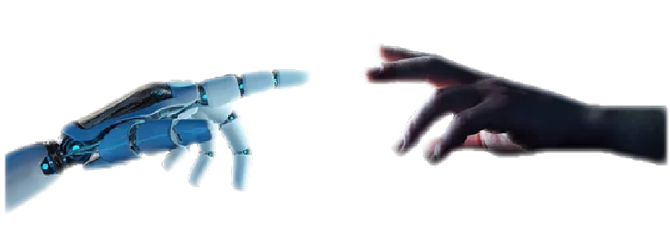

Development of eco-technologies It is impossible to imagine the present without modern technologies and developed infrastructure. Technical progress contributed to the development of society, allowing to influence natural processes and accumulate vital resources. The combined efforts of people and the de-standardization of applied methods gave rapid growth to precisely those industries that were in demand.

Impact on the environment
It is quite clear that the point of intersection of technology and human needs is nature. She instantly reacts to irresponsible behavior. Concentrating all efforts on obtaining resources often leads to significant changes in the ecosystem. The consequences of such activities have enough examples of terrible environmental disasters that do not pass without a trace, forming negative indicators of the environmental situation in the world.
Scientific activity has brought the worldview to a new level of perception and awareness, freeing space from archaisms for decisive actions, which is reflected in the specifics of setting goals and reassessing priorities.
Thus, technological evolution has solved global problems regarding the provision of humanity and taken care of its primary needs.
Environmental pollution has become the main driver for starting new industries and developing eco-technology aimed at preserving nature and human health.
Equally important is the actualization and development of mechanisms for overcoming existing problems, giving rise to the hope that a polluted environment will not be the norm in our time.
Recognizing the activities of society as the main influencing factor on natural processes is a key moment in building the concept of an ecologically safe future, allowing to focus on the preservation of the natural environment as the primary task.
This information confirms that, first of all, the impact on human health has become the main driver in this direction, providing a social and moral basis for overcoming the existing consequences.
For centuries, the consequences of the technological revolution have held hostage the planet's population, namely polluted air and water. It is possible to say without exaggeration that today there is no person whose life would not be affected by such factors, because they occupy the first places in their list.
There are various standards, as a rule, they approach international ones. Developed countries overcome the problems of lack of drinking water with complex solutions for extraction, purification, disinfection and use a modern water supply network. Less successful countries benefit from the benefits inherited from the beginning of the industrial age, namely outdated technologies and depleted water supply networks, which are partially replaced in case of critical accidents. Very poor countries may not have such resources.